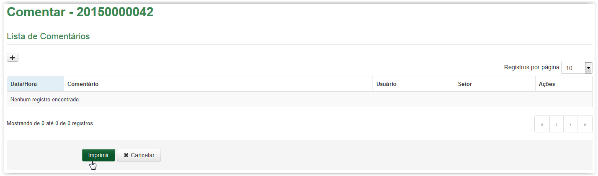
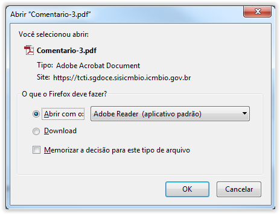
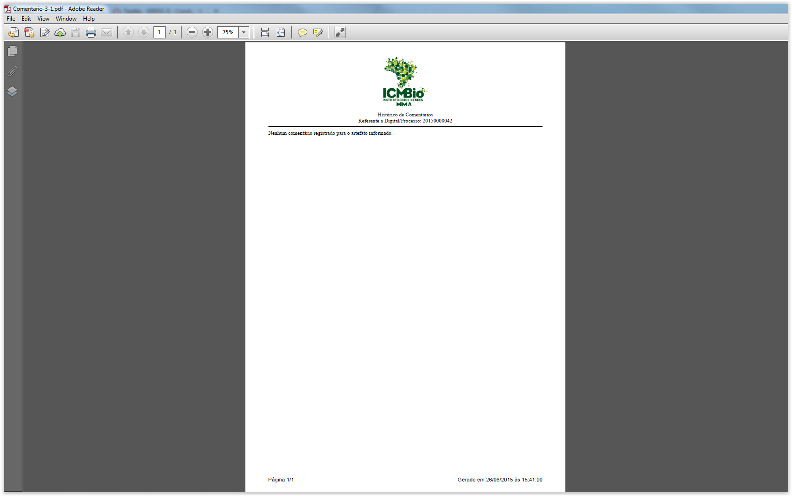
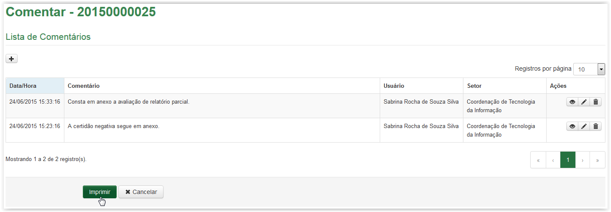
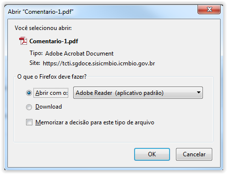
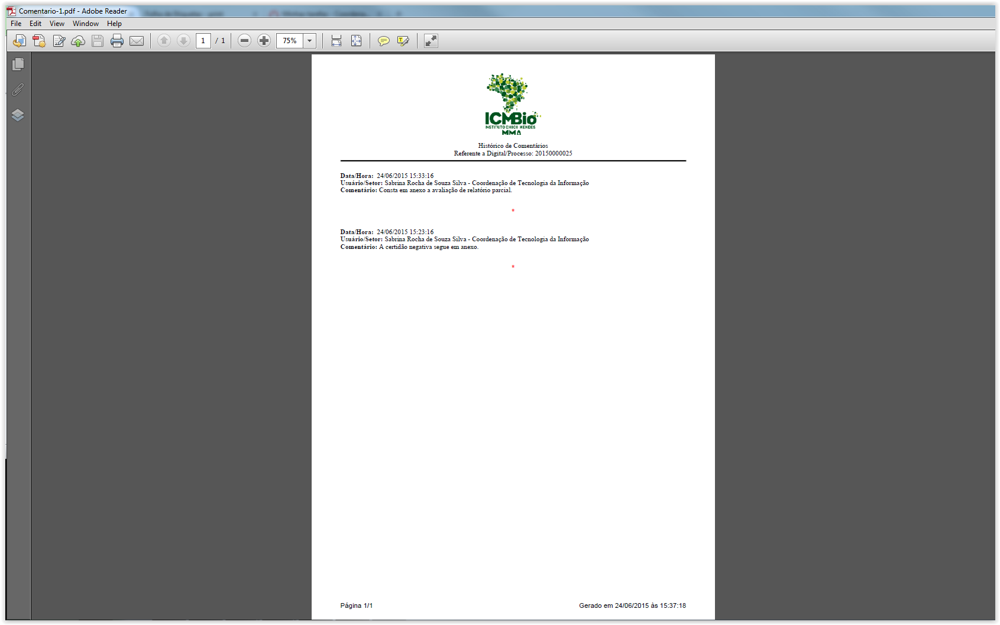
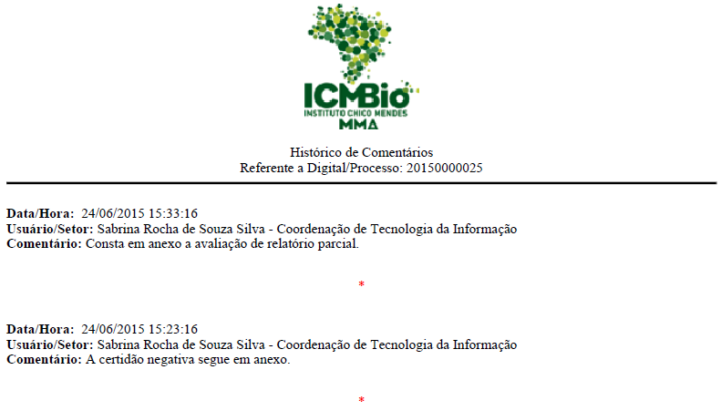

Comentar artefatos
A partir da tela Comentar, clique no botão  :
:

Imprimir Histórico de Comentários - Lista de Comentários vazia
A tela abaixo é apresentada. Para visualizar o documento clique no botão  , caso contrário, clique no botão
, caso contrário, clique no botão  :
:

Solicitação para apresentação ou download do documento em formato "PDF"
Ao clicar no botão o Histórico de Comentários, em formato “PDF”, é apresentado:

Histórico de Comentários - sem comentários cadastrados
O Histórico de Comentários apresenta no cabeçalho o logotipo do ICMBio, o título e o número da Digital ou Processo ao qual se refere. Logo após, é apresentada a mensagem: "Nenhum comentário registrado para o artefato informado.". No rodapé é apresentado ainda a data e hora da impressão e o número de páginas. Se desejar, o Histórico de Comentários poderá ser impresso.
A partir da tela Comentar, clique no botão :

Imprimir Histórico de Comentários - Lista de Comentários cadastrados
A tela abaixo é apresentada. Para visualizar o documento clique no botão , caso contrário, clique no botão :

Solicitação para apresentação ou download do documento em formato "PDF"
Ao clicar no botão o Histórico de Comentários, em formato “PDF”, é apresentado:

Histórico de Comentários
O Histórico de Comentários apresenta no cabeçalho o logotipo do ICMBio, o título e o número da Digital ou Processo ao qual se refere. Logo após, são apresentados todos os comentários cadastrados, até aquele instante, para o respectivo artefato (documento ou processo). São apresentadas as informações de cada comentário gerado: a data e hora, o nome do usuário e o setor de quem realizou o cadastro e o texto do comentário. No rodapé é apresentado ainda a data e hora da impressão e o número de páginas. Se desejar, o Histórico de Comentários poderá ser impresso.
Os comentários são apresentados separados um do outro por um símbolo de asterisco (*) na cor vermelha:

Created with the Personal Edition of HelpNDoc: Produce Kindle eBooks easily